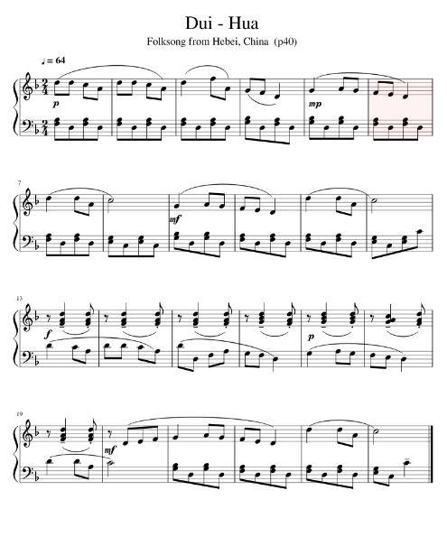
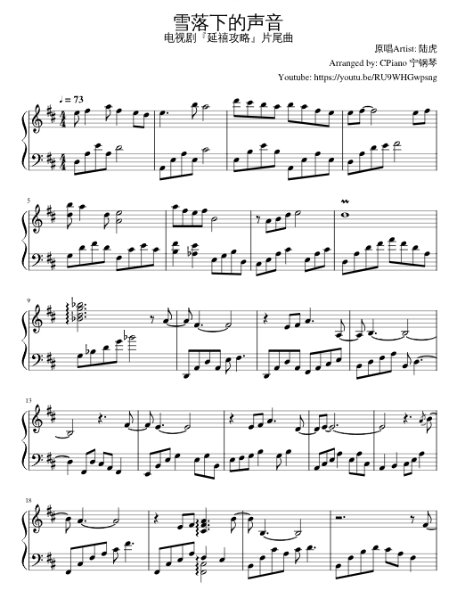

Except in special cases (such as free-rhythm introductions), most Chinese music is in duple rhythm. This fondness for duple rhythm (the Western equivalent of 2/4 and 4/4) can be attributed to the belief in the principle of natural duality (such as the female-male or yin-yang relationship). Let's look at a few examples of this.
No. 1: Folk Song

No. 2: Modern Song

No.3: Ancient Music